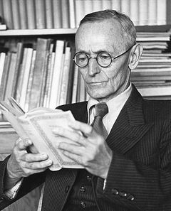

Герман Гессе
{kind=link}

Герман Гессе (нім. Hermann Hesse); (02 липня 1877, Кальв (Німеччина) — 09 серпня 1962, Монтаньйола, Лугано, Швейцарія) — німецький письменник, філософ, лавреат Нобелівської премії в галузі літератури 1946 року.
Найвідоміші твори: «Степовий вовк» (нім. Der Steppenwolf), «Гра в бісер» (нім. Das Glasperlenspiel). В Україні письменника вивчають у загальноосвітніх навчальних закладах в 11 класі та у вищих навчальних закладах — в обов'язковій програмі курсу зарубіжної літератури.
Герман Гессе: Маг і самотній вовк європейської літератури
Герман Гессе — це автор, якого або відкривають для себе в юності як духовного наставника, або перечитують у зрілому віці, шукаючи відповіді на вічні питання про сенс буття. Лауреат Нобелівської премії, художник, мислитель і людина, яка все життя намагалася примирити в собі «цивілізацію» та «природу».
Біографія: Шлях через терни до світла
Початок і бунт
Герман Гессе народився 2 липня 1877 року в містечку Кальв, Німеччина. Його родина була глибоко релігійною: батьки були місіонерами-пієтистами. Від Германа чекали продовження традиції, і він навіть вступив до духовної семінарії. Проте бунтівна натура хлопця далася взнаки — він втік із навчання, пережив глибоку депресію і навіть спробу самогубства. Це був початок його вічного конфлікту з усталеними нормами.
Пошук себе та Схід
Перш ніж стати професійним письменником, Гессе працював продавцем книг і механіком у годинниковій майстерні. Його ранні твори (наприклад, «Петер Каменцінд») принесли йому славу та фінансову стабільність.
Важливою віхою стала подорож до Індії у 1911 році. Хоча сама поїздка дещо розчарувала письменника, індійська філософія та буддизм назавжди стали частиною його світогляду, що згодом вилилося у знамениту повість-притчу «Сіддхартха».
Світова війна та вигнання
Під час Першої світової війни Гессе виступив проти націоналістичної істерії, за що його прозвали «зрадником батьківщини» в Німеччині. Він переїхав до Швейцарії, де згодом отримав громадянство. Смерть батька, хвороба дружини та жахи війни призвели його до сеансів психоаналізу в учня Карла Юнга. Саме цей досвід ліг в основу роману «Деміан», який зробив Гессе кумиром молоді.
Своє життя він завершив у спокої в містечку Монтаньола (Швейцарія) у 1962 році, залишивши після себе величезну спадщину з романів, віршів та картин.
Список творів Германа Гессе (хронологія)
Нижче наведено основні прозові твори автора. Варто зазначити, що Гессе також був видатним поетом та есеїстом.
| Рік | Назва українською | Оригінальна назва (Deutsch) | Жанр / Короткий опис |
|---|---|---|---|
| 1900 | Герман Лаушер | Hermann Lauscher | Збірка прози, що поєднує щоденникові записи та оповідання |
| 1904 | Петер Каменцінд | Peter Camenzind | Роман виховання; історія становлення митця |
| 1906 | Під колесом | Unterm Rad | Психологічна драма; критика деспотичної системи освіти |
| 1910 | Гертруда | Gertrud | Роман про музику, творчість та трагічне кохання |
| 1914 | Росхальде | Rosshalde | Психологічний роман про кризу шлюбу та вибір художника |
| 1915 | Кнульп | Knulp | Повість про мандрівного філософа-бродягу |
| 1919 | Деміан | Demian | Роман виховання з елементами психоаналізу та містики |
| 1919 | Кляйн і Вагнер | Klein und Wagner | Психологічна повість про внутрішній конфлікт та втечу від самого себе |
| 1920 | Останнє літо Клінгзора | Klingsors letzter Sommer | Експресіоністична повість про пристрасть та передчуття смерті |
| 1922 | Сіддхартха | Siddhartha | Філософська притча про пошук істини на Сході |
| 1927 | Степовий вовк | Der Steppenwolf | Інтелектуальний роман про кризу особистості та дуальність душі |
| 1930 | Нарцис і Гольдмунд | Narziss und Goldmund | Філософсько-алегоричний роман про дух та плоть |
| 1932 | Подорож до Країни Сходу | Die Morgenlandfahrt | Символічна повість про духовне паломництво та Таємне Братство |
| 1943 | Гра в бісер | Das Glasperlenspiel | Філософська утопія, Magnum Opus про культуру та дух |
Чому твори Гессе варто читати сьогодні?
Творчість Германа Гессе — це «література для тих, хто шукає». Його не можна читати поспіхом.
Головна цінність його книг полягає в концепції індивідуації. Він вчить, що справжнє призначення людини — не в тому, щоб стати успішним гвинтиком суспільства, а в тому, щоб знайти «шлях до самого себе».
У «Степовому вовку» він блискуче препарує людську дуальність — боротьбу між тваринним інстинктом та високою культурою.
У «Грі в бісер» він створює утопію інтелекту, водночас попереджаючи про небезпеку відриву еліти від реального життя.
Гессе пише неймовірно медитативною, прозорою мовою. Його твори — це своєрідна терапія, яка допомагає примиритися зі своїми внутрішніми суперечностями. Це література, яка дарує надію, що навіть у найтемніші часи можна знайти «магічний театр» власної душі.
Деякі книги Германа Гессе в перекладі українською мовою ви також можете переглянути на сайті chtyvo.org.ua.